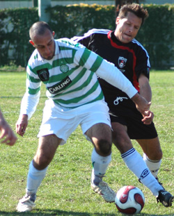

|
YC&AC, Sunday 18th November,
Stirling Bridge, Bannockburn, the Thin Red Line, David Livingstone, Sir Alexander Fleming, Stephen Hendry, the Dhougies. It all seemed so long ago on Sunday morning. How the mighty have fallen. Sala arrived at YCAC with the bare 11 while their tartan contingent were snuggly tucked up in their kilts (quilts) licking their wounds from their predictable failure to qualify for Euro 2008 and even more predictable hangovers.
Nevertheless after the Israel result the distinctly English looking squad appeared somewhat buoyant and sprightly and Sala looked ready to face one of their oldest rivals, the Kanto Celts. Sala started strongly in a very fast paced opening exchange. The pitch didn’t help the flow of the game and it wasn’t pretty. Finally, after a bit of pressure, good build up found young Sammy Matthews on the right who jinked past his marker to fire a Beckhamesque cross right on to Dhugal ‘toblerone head’ Bedingfield’s noggin and the ball flew into the top corner giving the keeper no chance.
Sala, spurred by their goal, pressed even harder with Jelley, Masa, Sam and Shige working tirelessly in midfield and jack of all trades Pete Swinney looking very accomplished at left back in his first start for Sala. It was young Matthews again who found space and put in a missile of a cross but unfortunately for Sala it hit the wrong angle of the toblerone and went out of the ground and down to the station.
As the three Sala Scots stirred in their futons, wrestling with persistent nightmares of unjust free kicks and last minute Christian Panucci headers, the Celts suddenly woke up and their physical presence caused a number of kafuffles in the Sala defense but Guido Geisler and Yusuke Watanabe held strong and Sala went in 1-0 up at half time.
Inevitably, as both teams strived for the three points, the second half became a bit more torrid and hostile. A stray leg from hard man Ian Jelley struck a Celts midfielder and Jorge decided he wasn’t getting enough attention and thought it was about time to produce a yellow card. Injured Sala manager Brookey had a Draper moment and took exception to the decision and vocalized his indignation by branding the Mexican ref something equating to a fornicating comedian. As if on cue, Jorge demonstrated his comedic talents by banishing the hotheaded manager to the children’s playground, where, apparently, he belonged.
Midway through the second half Shige Chino, sensing a lull in proceedings, decided to put in a couple of claims for goal of the season. His first effort, a sumptuous volley from the corner of the penalty box rocketed just wide and then an audacious but technically perfect bicycle kick dribbled tantalizingly across the face of goal.
A string of corners and free kicks failed to yield Sala the conclusive second goal. The Bard had a goal inexplicably ruled out for offside or it might have been disallowed for poor finishing at the first two attempts. Tiredness set in and the Sala players were searching for a William Wallace on the horizon but to no avail. This opened the door for an Irish onslaught and some very nervy last few minutes. As alarm bells were ringing undetected twenty five miles away in Roddy’s bedroom in Asakusa they were also ringing in the Sala defense. A rare lapse at the back almost let one of the more nimble Celts players through on goal but old Hacker Lennerington put in a crucial late challenge to deny the Celts a late equalizer. Jorge decided to play 9 minutes injury time but there was no way past Geisenhefler and his young apprentice Yusuke the lion heart and it finished 1-0. A fair result against a tough opposition played in a gentlemanly manner.
MOTM / MVP Yusuke.
Report by Brookey
(& 1 paragraph by Le Toblerone)
|